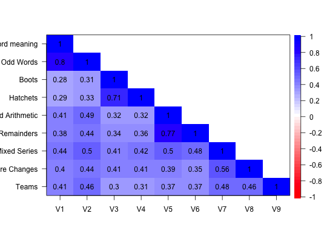

Shapiro and ten Berge use the Schutz correlation matrix as an example for Minimum Rank Factor Analysis. The Schutz data set is also a nice example of how normal minres or maximum likelihood will lead to a Heywood case, but minrank factoring will not.
data("Schutz")
The format is: num [1:9, 1:9] 1 0.8 0.28 0.29 0.41 0.38 0.44 0.4 0.41 0.8 ... - attr(*, "dimnames")=List of 2 ..$ :1] "Word meaning" "Odd Words" "Boots" "Hatchets" ... ..$ : chr [1:9] "V1" "V2" "V3" "V4" ...
These are 9 cognitive variables of importance mainly because they are used as an example by Shapiro and ten Berge for their paper on Minimum Rank Factor Analysis.
The solution from the fa function with the fm='minrank' option is very close (but not exactly equal) to their solution.
Richard E. Schutz,(1958) Factorial Validity of the Holzinger-Crowdeer Uni-factor tests. Educational and Psychological Measurement, 48, 873-875.
Alexander Shapiro and Jos M.F. ten Berge (2002) Statistical inference of minimum rank factor analysis. Psychometrika, 67. 70-94
#f4min <- fa(Schutz,4,fm="minrank") #for an example of minimum rank factor Analysis #compare to #f4 <- fa(Schutz,4,fm="mle") #for the maximum likelihood solution which has a Heywood case